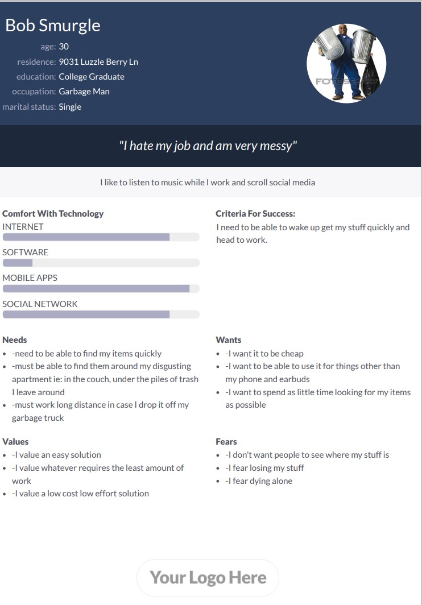
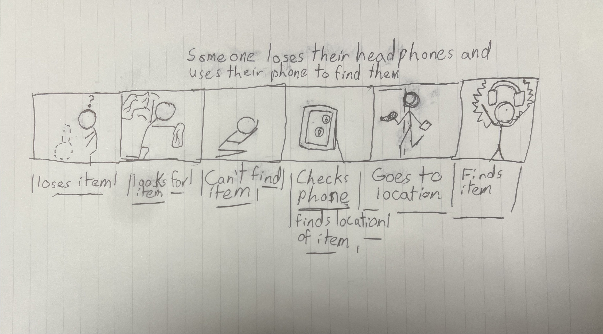
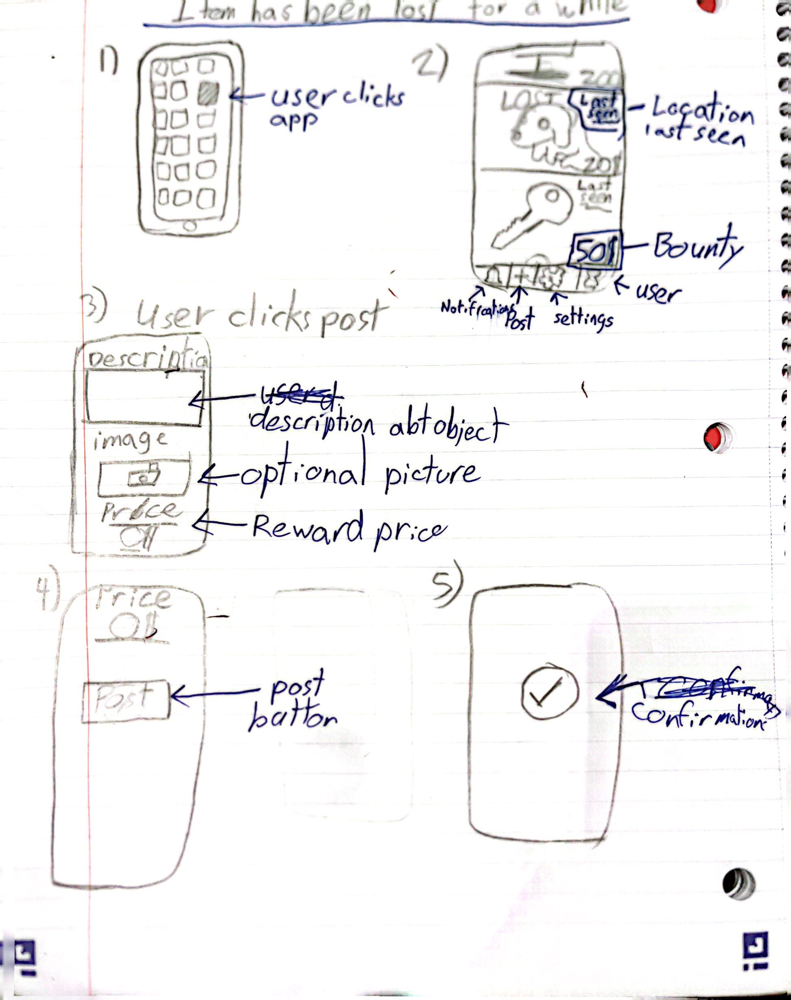
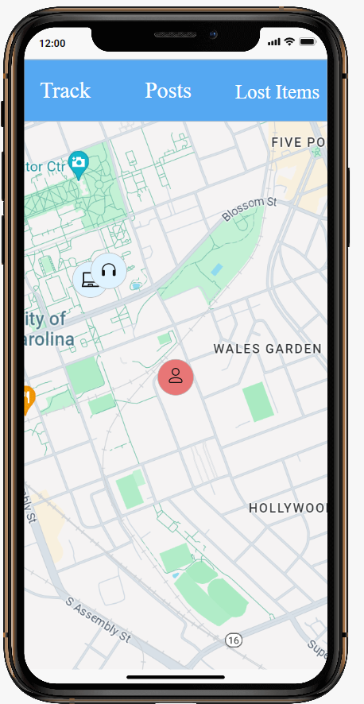

Problem Statement: Lost Items
People lose their electronic devices easily, but have difficulty finding them. So they need help
People lose their electronic devices easily, but have difficulty finding them. So they need help

For 40 days and 40 nights me and my group worked to cover all things lost items

"I hate my job and am very messy"

Someone loses their headphones, and needs to locate them with his phone to find them

Are group created sketches of apps related to the locating of lost items. One focuses on a gps system that helps locate lost item on a map. Another sketch focuses on the ability to share pictures of items that may have been misplaced. The final two sketches focus on a social media app that allows the user to post about their lost items with one sketch focusing on user response to posts and the other focusing on monetary rewards for items.

Our team assembled a paper prototype displaying the location, feed, and post features. All of these features are organized by tabs named track, posts, and lost items respectively. The track tab allows the user to register and view devices that are being tracked. The posts tab allows the user to view and comment on other people's posts about items they may have misplaced. You can also create your post from this tab. Finally, the lost items tab allows you to edit your posts, view comments, and direct message people about your lost item.

Our team created a High Fidelity prototype displaying three tabs: Tracking, Posts, and Lost Items. Tracking allows you to view a list of items that will appear on your home page and edit them. Posts let you view posts about other people's lost items and comment on them. Finally, Lost Items lets you view your posts, see comments on your posts, DM people in your comments, and edit your posts.